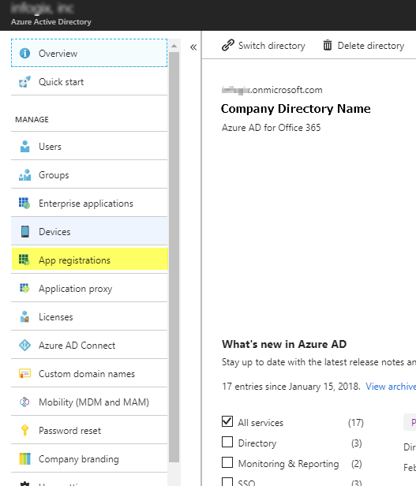
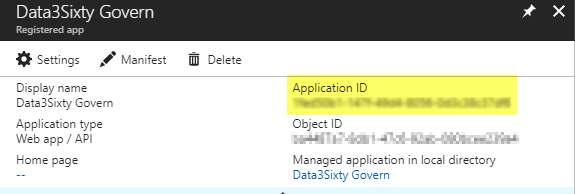
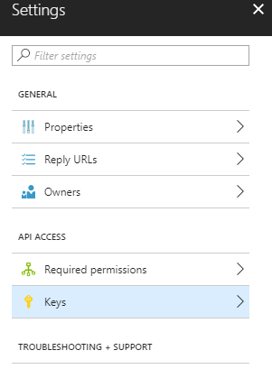
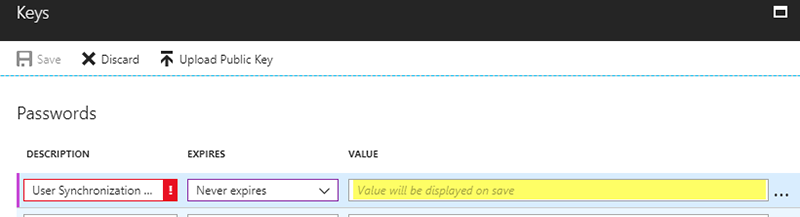
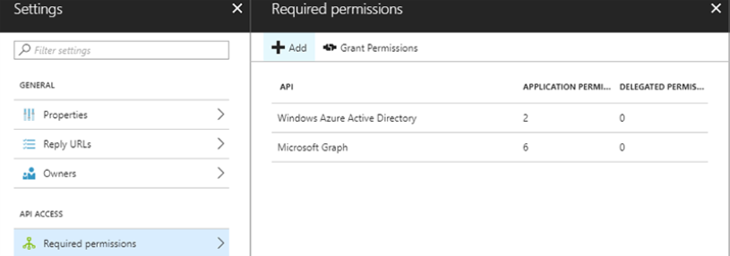
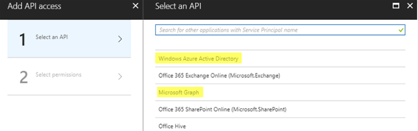
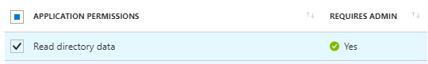
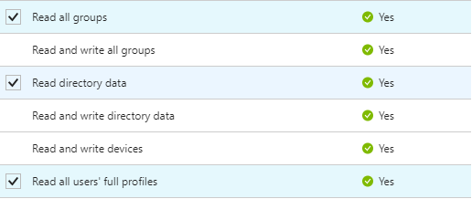

Open topic with navigation
Azure Active Directory
For information on configuring single sign-on with Azure Active Directory, see the Microsoft Azure documentation, for example:
https://docs.microsoft.com/en-us/azure/active-directory/active-directory-saas-custom-apps
The field values for Infogix Data3Sixty are:
- Application Name:
Infogix Data3Sixty Govern
- Single Sign-on Mode:
SAML-based Sign-on
- Identifier:
https://data3sixty.com/ui
- Reply Url:
https://<Client_environment>. data3sixty.com/sso/acs
- SAML Token Attributes: See Configuring Active Directory.
Synchronizing users
You can synchronize users from Azure Active Directory (AAD), prior to users logging into the system and having an account created upon login (i.e. on-demand provisioning).
- Navigate to the Azure portal for your organization and click Azure Active Directory, then select App registrations:

- Create a new application registration using your enterprise application name.
- From the result grid, click the newly created registration. Make a note of the Application ID, as you will need to provide this to Infogix Support:

- Click Settings, then select Keys:

- Add a password account. Save the hashed password value as you will need to provide this to Infogix Support:

- Select Required permissions, then click Add:

- Complete steps 1 and 2 to add API access:

On step 2 for Windows Azure Active Directory, choose the following permissions:

For Microsoft Graph, choose the following permissions:

- After saving, you will need to grant these permissions as a Global Administrator, from the following link: https://login.microsoftonline.com/common/adminconsent?client_id=6731de76-14a6-49ae-97bc-6eba6914391e&state=12345
The client_id should be the Application ID noted in step 3. The state field may be any value.
- Provide the following information to Infogix Support:
- Tenant ID
- Application ID
- Password hash